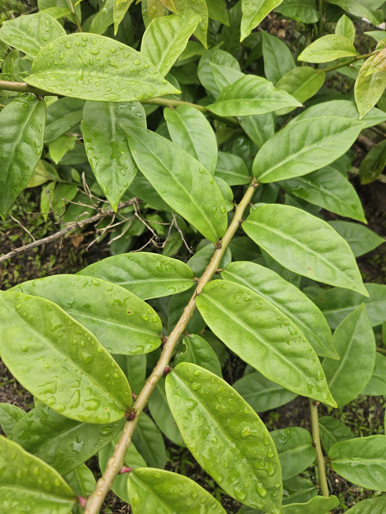
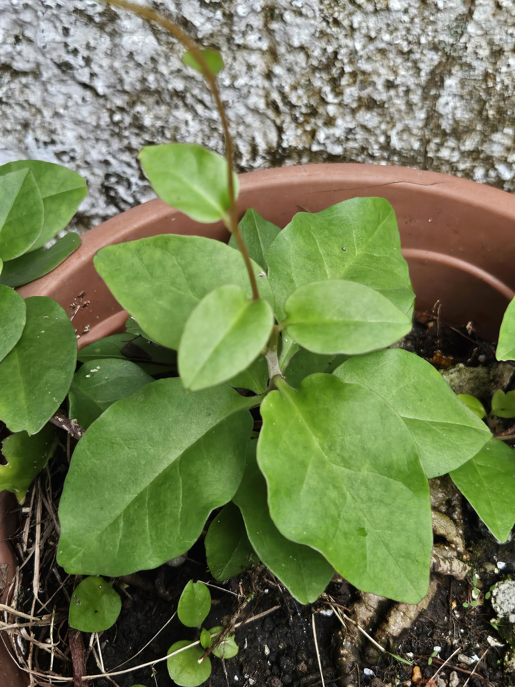
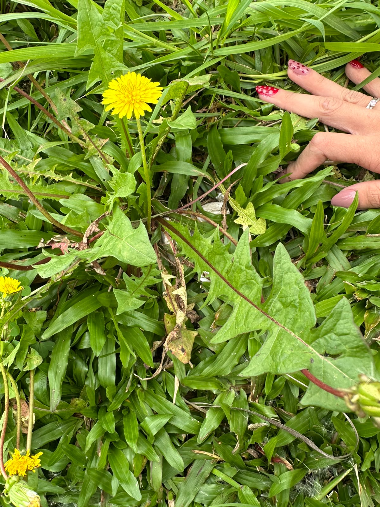
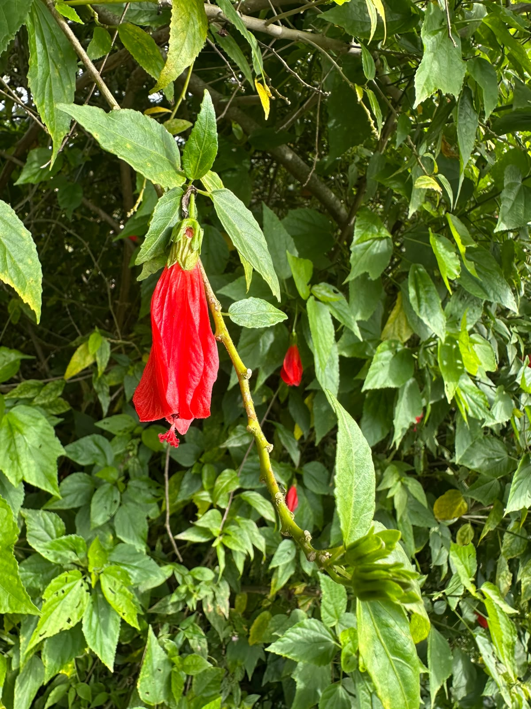
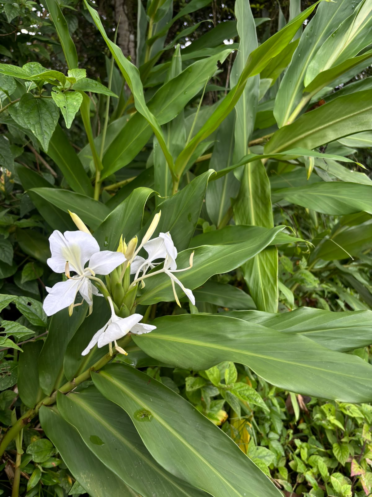
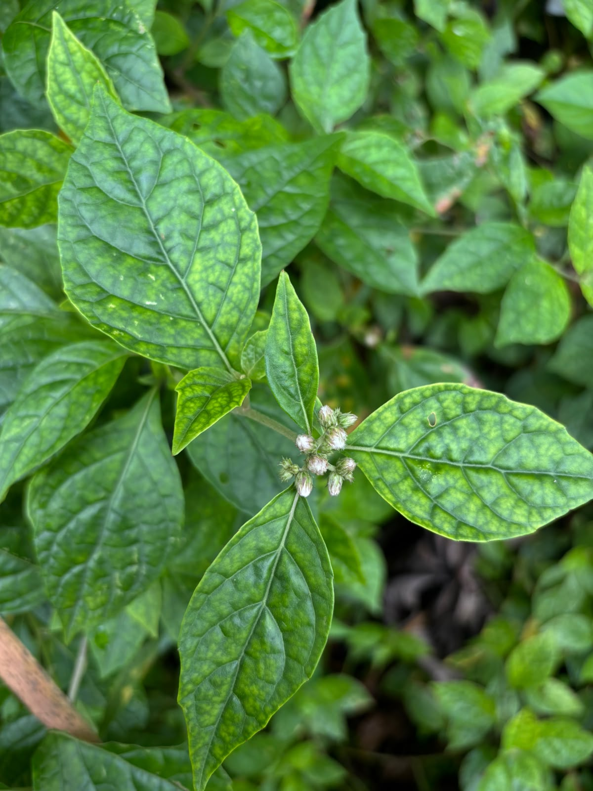
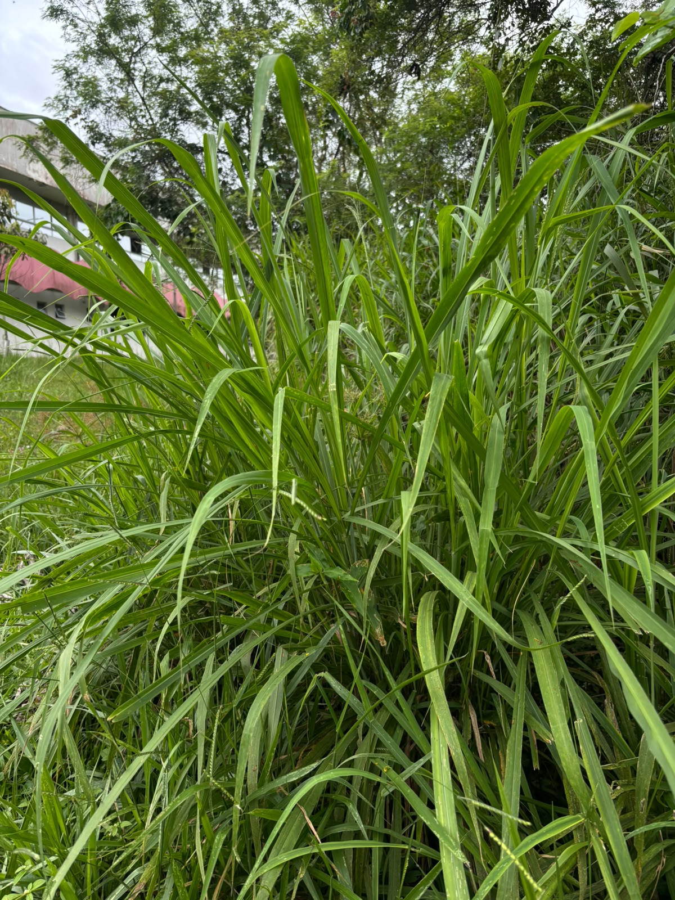
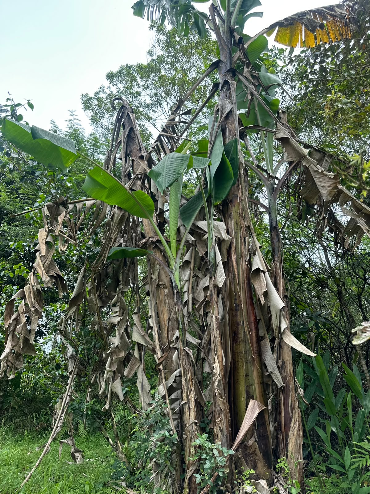
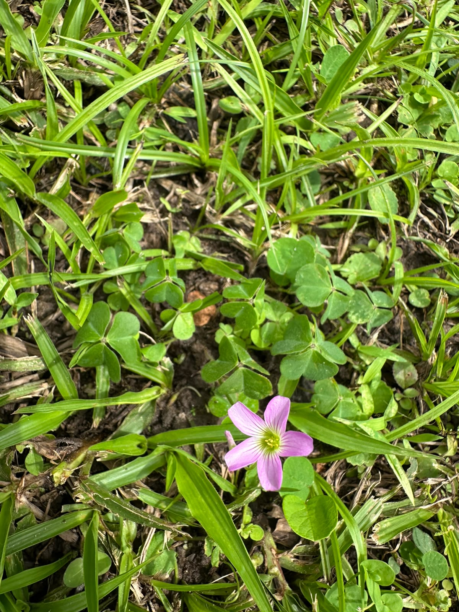

Documento de Apoio e Campo — Identificação e Histórico Taxonômico

Data da Coleta: 10/2/26
Local da Coleta: Pontal do Sul - Casa da Bruna
Porte: Liana / Trepadeira
Características Marcantes: Espinhos / Acúleos
Dimensões: Altura: 15cm - 30cm / Comprimento folha: 2cm - 5cm

Data da Coleta: 10/2/26
Local da Coleta: Pontal do Sul - Casa da Bruna
Porte: Liana / Trepadeira
Características Marcantes: Presença de Seiva/Mucilagem
Dimensões: Altura: 20cm - 40cm / Comprimento folha: 4cm - 7cm

Data da Coleta: 10/3/26
Local da Coleta: Calçadão de Matinhos
Porte: Erva
Características Marcantes: Presença de Látex
Dimensões: Altura: 12-15cm / Comprimento folha: 8-15cm

Data da Coleta: 10/8/26
Local da Coleta: Matinhos - Casa da Tia da Lyz
Porte: Arbusto
Características Marcantes: Nenhum especial
Dimensões: Altura: 2m - 4m (Flor: 4cm - 6cm) / Comprimento folha: 6cm - 12cm

Data da Coleta: 10/9/26
Local da Coleta: IFPR - Campus Paranaguá
Porte: Erva
Características Marcantes: Odor característico
Dimensões: Altura: 1m - 2m

Data da Coleta: 10/9/26
Local da Coleta: IFPR - Campus Paranaguá
Porte: Erva
Características Marcantes: Nenhum especial
Dimensões: Altura: 40cm - 90cm

Data da Coleta: 10/9/26
Local da Coleta: IFPR - Campus Paranaguá
Porte: Erva
Características Marcantes: Odor característico
Dimensões: Altura: até 120cm

Data da Coleta: 10/9/26
Local da Coleta: IFPR - Campus Paranaguá
Porte: Erva
Características Marcantes: Presença de Seiva/Mucilagem
Dimensões: Altura: 3m - 7m

Data da Coleta: 10/9/26
Local da Coleta: IFPR - Campus Paranaguá
Porte: Erva
Características Marcantes: Nenhum especial
Dimensões: Altura: até 5cm